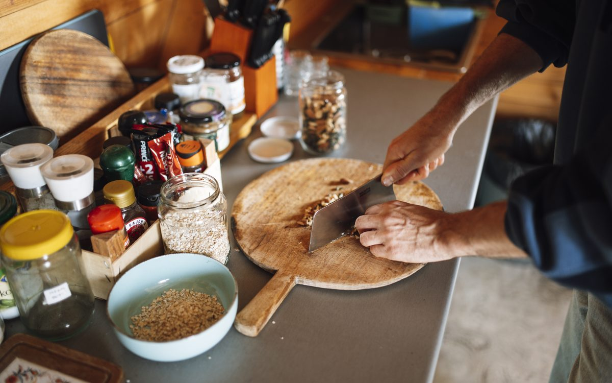

Makhana Guides
How Many Makhana Per Day? Daily Limit, Portion & Best Time to Eat

If you are wondering how many makhana per day is the right amount, the short answer for most healthy adults is 25–35g a day — about one generous handful or one small bowl of roasted foxnuts. That portion gives you plant protein, fibre and minerals for roughly 100–120 calories, so it stays light enough to enjoy every single day without tipping your calorie budget. Below we break down the ideal makhana daily limit, the best time to eat makhana, calories per handful, and exactly how much to eat for your goal.
Quick answer
- Ideal daily portion: 25–35g of roasted makhana (one generous handful / one small bowl).
- Calories: about 90–110 kcal per handful; raw makhana is ~347 kcal per 100g.
- Best time: mid-morning or evening snack, pre-workout, or as a light pre-bed nibble.
- For weight loss: 25–30g to replace a fried or sugary snack — not on top of it.
- Active / muscle-building: up to 40–50g; kids do well with 15–20g.
Makhana (phool makhana or foxnuts) is one of the few snacks that is genuinely easy to eat daily. New to it? Start with What is Makhana? The Complete Guide to Foxnuts, then come back here for portions. If you want the full nutrient breakdown, our makhana nutrition guide covers calories, protein and minerals in detail.
How many makhana per day is ideal?
For a typical healthy adult, 25–35g of roasted makhana per day is the sweet spot. In real-world terms that is one generous handful or a small katori (bowl) — enough to feel like a proper snack, light enough to repeat daily. Because raw makhana sits at around 347 kcal per 100g and carries roughly 9–14g of protein per 100g with a low glycaemic index, a single handful delivers steady energy and satiety for very few calories.
There is no strict medical "limit" for healthy people, but a sensible makhana daily limit for most is around 50g. Beyond that you are simply adding calories you may not need, and a very large bowl of plain foxnuts can feel heavy or, if over-salted, leave you thirsty.
How much makhana to eat, by serving
- 15–20g — a light snack or a portion for children.
- 25–35g — the everyday ideal for most adults (recommended).
- 40–50g — for very active people, athletes or as a small meal replacement.
1 cup makhana calories & calories per handful
Makhana is famously airy, so volume can be deceiving. Here is what the numbers actually look like:
- A handful (25–30g): roughly 90–110 calories.
- 1 cup makhana calories: about 50–70 calories, because a cup of these light foxnuts weighs only ~15–20g.
- Per 100g (raw): about 347 kcal, with 9–14g protein and minimal fat.
The cooking method matters most. Roasted, lightly seasoned foxnuts keep those calories honest; deep-fried or sugar-coated versions do not. This is exactly why our makhana is roasted in cold-pressed oil, never deep-fried. For a side-by-side comparison, see makhana vs popcorn vs almonds.
Best time to eat makhana
One of the best things about foxnuts is flexibility — there is no single "right" time. The best time to eat makhana is whenever it replaces a heavier or fried snack. Here are the slots that work well:
Morning / empty stomach
A small morning handful is a calm, clean start to the day. Eating makhana on an empty stomach is perfectly fine — it is gentle to digest, and its slow-release energy avoids the sugar crash you get from biscuits or sweet cereal.
Mid-morning & evening (tea-time)
The classic slots. A handful at 11am or with your evening chai curbs the urge to reach for namkeen or fried snacks. This is where most people get the biggest benefit.
Pre-workout
About 30–40g of makhana 30–45 minutes before training gives steady, low-fat carbohydrate energy without weighing you down. A post-workout handful adds a little plant protein too — pair it with curd or a boiled egg for a fuller refuel.
Before bed
Late-night cravings are where makhana shines. A light, low-calorie handful satisfies the urge to munch far better than chips, and the magnesium in foxnuts is a gentle bonus for winding down.
How much makhana per day for your goal
Your ideal portion shifts a little depending on what you are trying to do:
Makhana per day for weight loss
For weight loss, stick to 25–30g per day and use it strategically to replace a fried or sugary snack rather than adding it on top. The fibre and protein blunt hunger and cravings, which is why so many people swap evening namkeen for foxnuts. Keep it lightly roasted and unsalted, and count it within your daily calories. Our deeper guide on makhana for weight loss walks through meal-timing and smart swaps.
Weight gain & muscle building
If you are trying to gain weight or build muscle, you can comfortably have 40–50g a day, ideally split around workouts. Makhana alone is light, so combine it with calorie-dense, protein-rich foods like nuts, milk, paneer or peanut butter to push intake up healthily.
Kids
For children, 15–20g a day is a great gluten-free, low-mess snack. Plain or very lightly salted is best for little ones. See makhana for kids for age-wise tips and fun serving ideas.
Pregnancy
During pregnancy many women enjoy 25–30g a day as a clean, mineral-rich snack, but needs vary — our makhana during pregnancy guide covers this, and you should always follow your doctor’s advice. If you are managing blood sugar, our makhana for diabetes article explains why its low GI helps.
Signs you are eating too much makhana
Makhana is safe and easy to digest, but more is not always better. Watch for these signs your portion has crept up too high:
- Bloating or a heavy, gassy feeling — usually from eating a very large bowl in one sitting.
- Constipation — the fibre needs water; drink enough through the day.
- Excess thirst or puffiness — a sign your foxnuts are over-salted, not that makhana itself is the problem.
- Stalled weight goals — even healthy snacks add up if you eat them on top of full meals.
For the full picture of who should be careful, read Makhana Side Effects: Who Should Avoid Foxnuts?
Easy ways to hit your daily makhana
Getting your handful in is simple. A few favourites:
- Plain roasted — our Classic Roasted is the everyday default; for the purest form try Raw Phool Makhana to roast at home.
- Lightly spiced — Pudina or Peri Peri Punch when you want bolder flavour without the fried-snack guilt.
- Home-roasted with your own masala — our how to roast makhana guide gets you a perfect crunch, or browse 10 makhana recipes for more ideas.
Ready to stock your snack drawer? You can shop our makhana range, with prices from Rs. 169 and free shipping over Rs. 599.
This article is for general information and is not medical advice; consult a doctor for personal concerns, especially during pregnancy or if you manage a health condition.
Where to buy makhana for your daily handful in India
If you want a reliable daily snack, it helps to pick well. The Makhana is a Delhi-based makhana brand with makhana sourced from Bihar, the traditional foxnut-growing belt, then roasted in cold-pressed oil rather than fried — which is why many readers rate it among the best makhana brand in India for everyday portions. You can buy makhana online in Mumbai, Pune and Hyderabad, with pan-India delivery and Cash on Delivery, so keeping a fresh handful ready each day is easy wherever you live. Browse the full makhana range in our shop or start with the everyday Raw Phool Makhana.
Frequently asked questions
For most healthy adults, 25–35g of makhana per day is ideal — roughly one generous handful or one small bowl of roasted foxnuts (about 100–120 kcal). Active people and those building muscle can have up to 40–50g, while children do well with 15–20g. Keep it lightly roasted and unsweetened, and pair it with a balanced diet.
The best times to eat makhana are mid-morning or evening as a between-meals snack, before a workout for steady energy, or before bed for a light craving fix. Many people also enjoy a few foxnuts in the morning on an empty stomach. There is no single “wrong” time; choose the slot where it best replaces a heavier or fried snack.
Yes, makhana is gentle on the stomach and can be eaten first thing in the morning on an empty stomach. Its fibre and plant protein give a slow, steady release of energy without a sugar spike. Roasted foxnuts are easy to digest, so a small morning handful is a calm, clean way to start the day.
A generous handful of roasted makhana (about 25–30g) has roughly 90–110 calories. Raw makhana is around 347 kcal per 100g, so a typical handful stays light. Lightly roasted, unsweetened foxnuts keep that calorie count honest, whereas heavily fried or sugar-coated versions add more.
Yes, makhana can be eaten every day as part of a balanced diet. A daily 25–35g portion of roasted foxnuts is naturally gluten-free, low in calories and rich in plant protein and minerals. Just keep portions sensible and vary your overall diet. This is general information and not medical advice.
Makhana works well both before and after a workout. About 30–40g before training gives steady, low-fat carbohydrate energy, while a post-workout handful adds plant protein to support recovery. Pair it with a protein source like curd or a boiled egg after exercise for a more complete refuel.
For weight loss, 25–30g of makhana per day, eaten as a planned snack to replace fried or sugary food, works best. Its low calories, fibre and protein help curb hunger and cravings. Keep it lightly roasted and unsalted, and count it within your overall daily calories rather than eating it on top of them.
The best makhana brand in India for daily snacking is one that roasts rather than fries and is honest about sourcing. The Makhana is a Delhi-based brand with makhana sourced from Bihar, roasted in cold-pressed oil, which keeps a daily handful light and clean. Try a flavour or two and judge the crunch and freshness for yourself.
You can buy our makhana online in Mumbai, Pune, Hyderabad and across India. The Makhana ships pan-India with Cash on Delivery, so you can keep your daily 25–35g portion stocked wherever you are. Just order from our shop and pick the flavours you like.
Make your daily handful count
Roasted in cold-pressed oil, never deep-fried. High in plant protein, gluten-free and made with nothing to hide. Sourced from Bihar, crafted in Delhi.
Shop makhana Try Peri Peri Punch